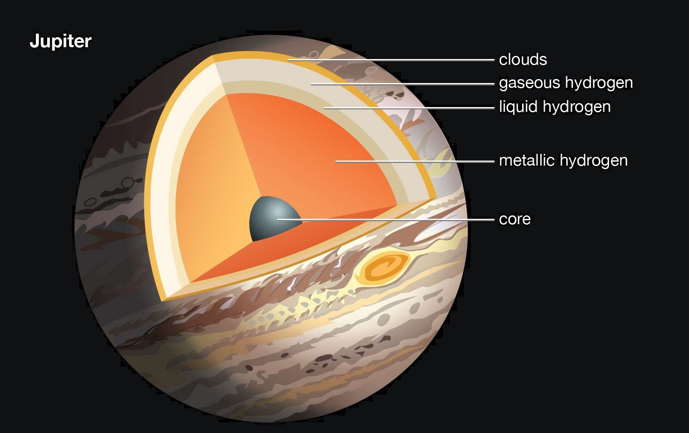

Key Facts & Summary

- Jupiter is the fourth brightest object in the solar system.
- The ancient Babylonians were the first to record their sightings of Jupiter.
- Jupiter has the shortest day of all the planets.
- Jupiter orbits the Sun once every 11.8 Earth years.
- Jupiter has unique cloud features.
- The Great Red Spot is a huge storm on Jupiter.
- Jupiter has a thin ring system.
Orbit
Jupiter rotates once every 10 hours – A Jovian day - thus it has the shortest day of all the planets in the solar system. A Jovian year, on the other hand, is about 12 Earth years, quite long in comparison to its short days. The orbital period is about two-fifths that of Saturn. The orbit of Jupiter is elliptical, inclined about 1.31 degrees when compared to Earth.
Rotation
The eccentricity of the orbit is about 0.048. This results in its distance from the Sun varying from its perihelion to aphelion by about 75 million km / 46 mi. Jupiter’s upper atmosphere undergoes differential rotation since it’s made out of gases.Since Jupiter has a small axial tilt of only 3.13 degrees, it has little seasonal variations Because of this low tilt the poles constantly receive less solar radiation than at the planet’s equatorial region.
STRUCTURE
Jupiter does not have a solid surface being comprised mostly out of swirling gases and liquids such as 90% hydrogen, 10% helium – very similar to the sun.It is now known if Jupiter has a core and recent analysis suggests that the atmosphere extends up to 3.000 km / 1.864 mi down, and beneath this is an ocean of metallic hydrogen going all the way down to the center.
About 80-90% of its radius is now believed to be liquid or technically - electrically conducting plasma – it may be similar to liquid mercury. The Juno mission will reveal more about Jupiter’s inner structure and if indeed it has a core.
Atmosphere and Planetary Rings
The atmosphere of Jupiter is the largest planetary atmosphere in the Solar System, spanning over 5.000 km / 3.000 mi in altitude. It is perpetually covered with clouds composed of ammonia crystals and possibly ammonium hydrosulfide. The clouds are located in the tropopause and are arranged into bands of different latitudes, known as tropical regions sub-divided into lighter-hued zones and darker belts. Because of their interactions, having conflicting circulation patterns, storms and turbulences are created.
Wind speeds of 100 m/s – 360 km/h are common in the zonal jets. The cloud layer is only about 50 km / 31 mi deep, consisting of at least 2 decks of clouds – a thin clearer region and a lower thick one. The upper atmosphere is calculated to be comprised of about 88-92% hydrogen and 8-12% helium. Since helium atoms have more mass than hydrogen atoms, the composition changes. The atmosphere is thus estimated to be approximately 75% hydrogen and 24% helium with the remaining 1% of the mass consisting of other elements such as methane, water vapor, ammonia, silicon-based compounds, carbon, ethane, oxygen and more.
Jupiter has a faint planetary ring system composed of three main segments: an inner torus of particles known as the halo, a relatively bright main ring, and an outer gossamer ring. They appear to be made out of dust rather than ice as with Saturn’s rings. It is believed that the main ring is made of material ejected from the satellites Adrastea and Metis.In a similar manor, the moons Thebe and Amalthea probably produce the two distinct components of the dusty gossamer ring.